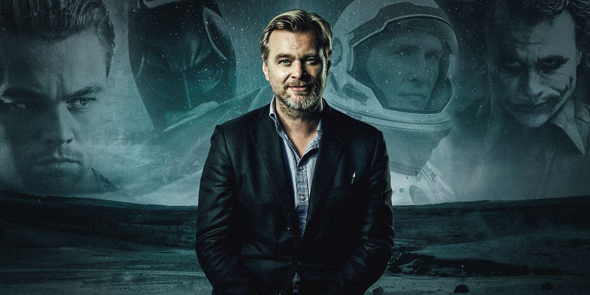
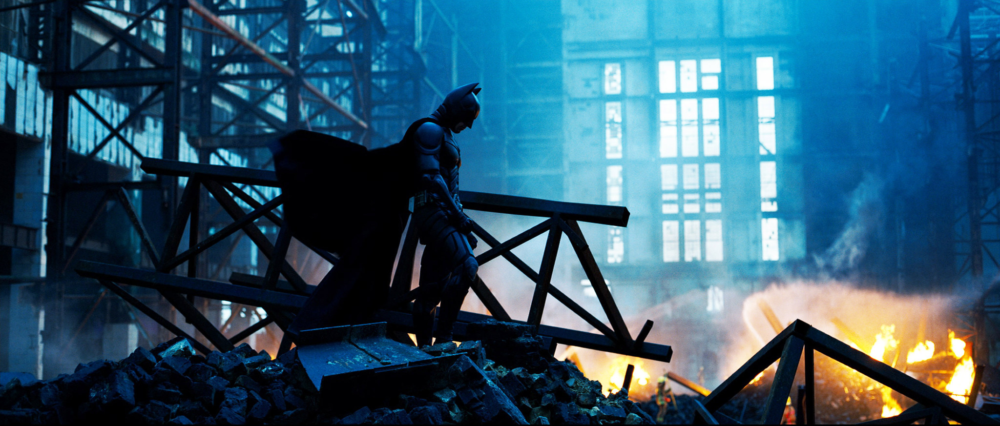
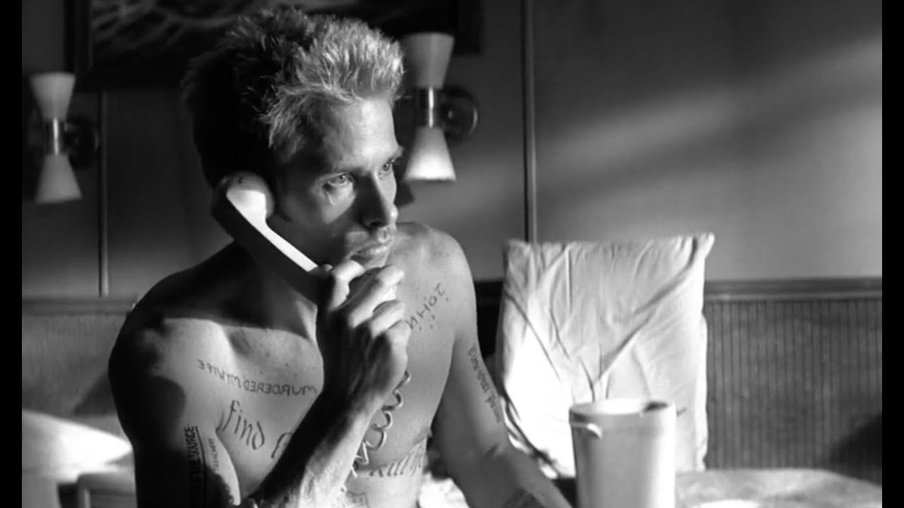
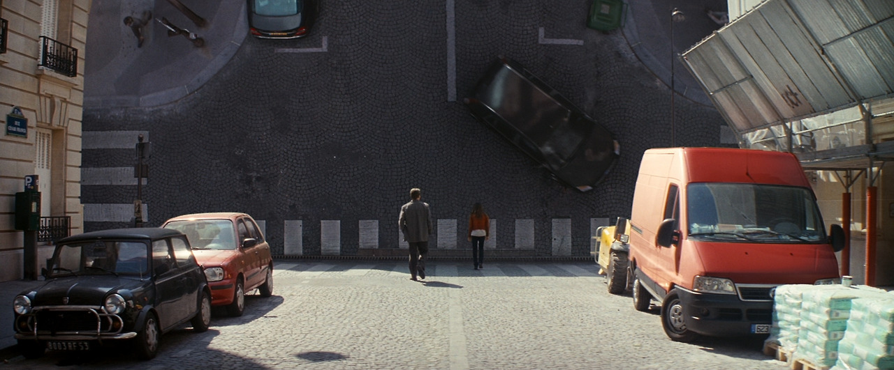
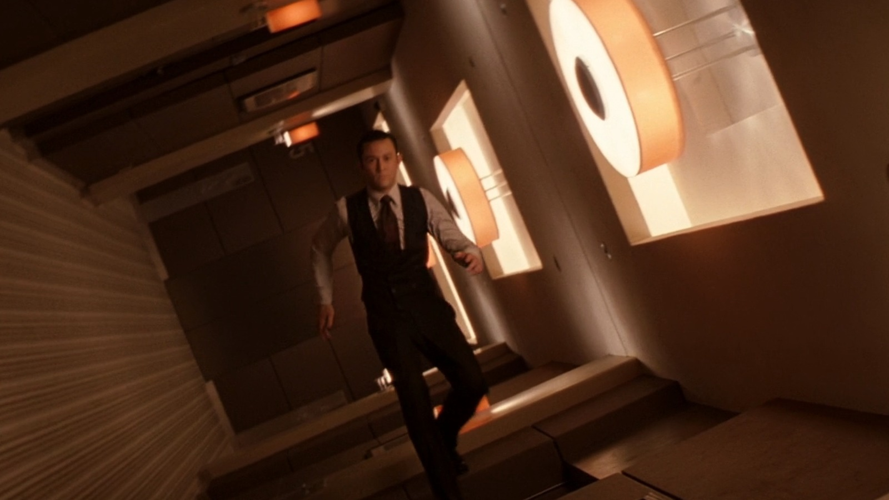
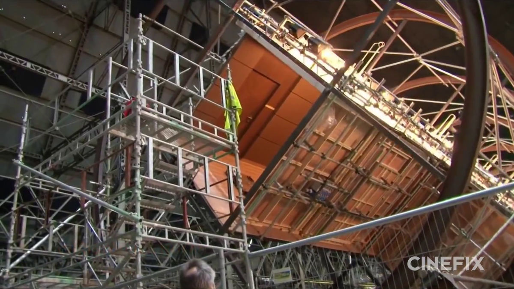
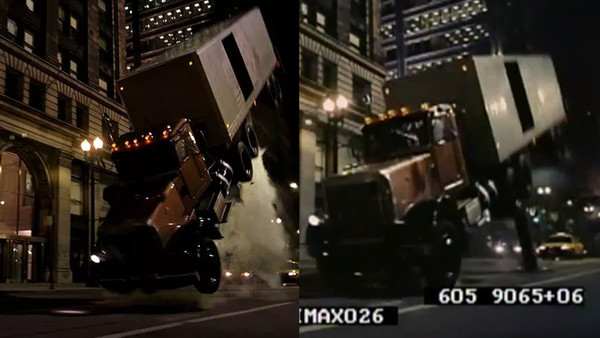
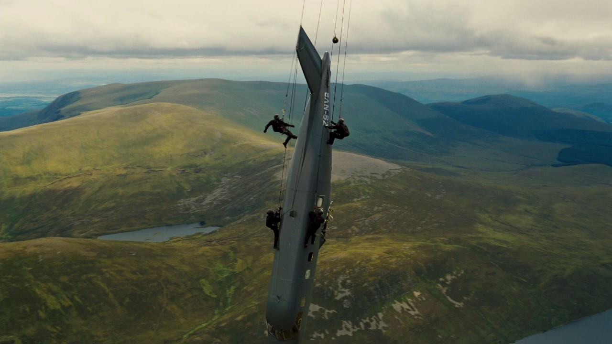
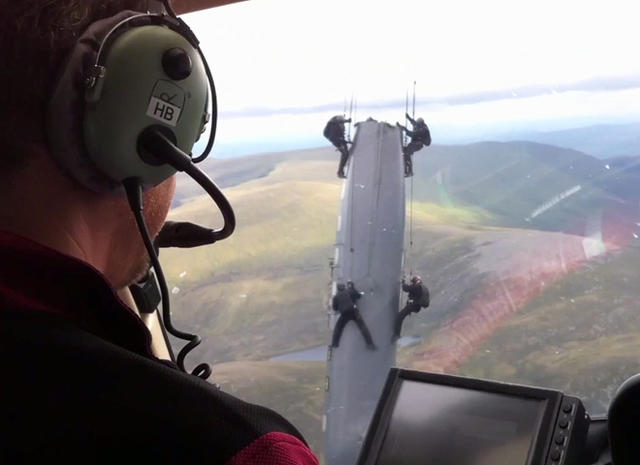

Christopher Nolan is, in my opinion, one of the greatest
film directors of all time. From the mind-bending storytelling
of Memento and Inception to jaw-dropping spectacles of
The Dark Knight and Tenet, he is truly a master of visual storytelling.
Below are a few of my favorite shots from his best works.



While many of his films deal with fantastical, larger-than-life stories,
you would be surprised to hear that many scenes from his films with the most
awe inspiring visual spectacles are filmed practically without the use of CGI, either with a miniature, a special set,
or a genuine death-defying stunt. Here are a few examples.


Rotating hallway for the zero-g hallway fight scene from Inception

Real 18 wheeler flipped with a hydraulic piston


Actual plane fuselage with stuntment suspended mid air